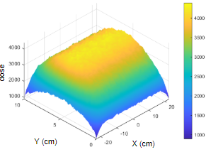
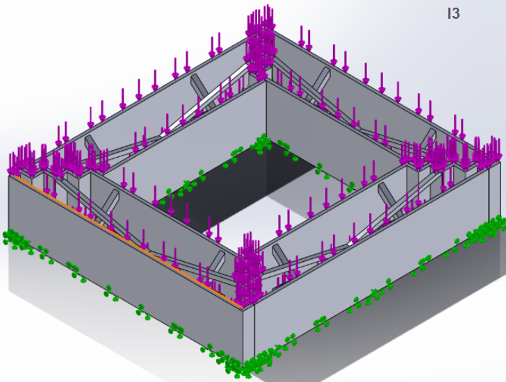
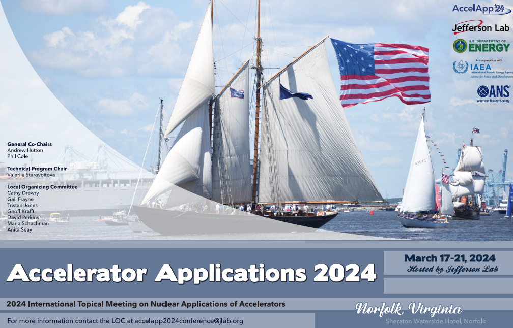

The Problem
Contaminated soils, including soils carrying persistent “forever chemicals,” are expensive and slow to clean up when they have to be excavated and transported to a fixed treatment facility. Electron beam irradiation can break down contaminants, but conventional accelerator facilities are permanent installations.
The goal of this Department of Energy–funded research was to determine whether an electron beam treatment station could be made mobile, meaning designed to fit on a road-going trailer and still deliver an effective dose to the soil.
The hard part was fitting a radiation facility onto the road. The station had to carry enough shielding to contain the beam, stay within what a trailer can haul, and still treat soil fast enough to be worth moving. My first layout weighed about 40 tons, far too heavy to pull on a trailer, so I had to rethink how and where to shield it.
My Role
- Owned the mechanical design of the mobile facility as my M.S. thesis under Dr. David Staack.
- Hosted weekly design reviews with my research advisor to evaluate progress and strategize improvements.
- Used SolidWorks to assess feasibility, estimate total facility weight, and run FEA simulations.
- Presented the work at the 2024 International Topical Meeting on Nuclear Applications of Accelerators.
Approach
I developed the trailer layout and soil-loading assembly in CAD, then iterated on the design using weight estimates and FEA results to keep the system within mobile-transport limits. Dose-profile simulations were used to check that soil passing under the beam received an effective, even treatment.
The thesis compared two design configurations for a scaled pilot on radiation shielding, manufacturability, size and throughput, mobility, cost and ease of setup. I checked the structure with SolidWorks FEA and used PUFFIn+ to simulate how beam energy, soil thickness and beam use affect treatment. The key decisions:
- One trailer. The whole facility travels on a single trailer with three or more axles, as an oversize load.
- Shield only the beam rooms. About 6 in of stainless steel surrounds the treatment room, with clamshell shielding around the accelerator.
- Thin, even soil layer. A 3 MeV, 50 kW beam treating a 0.5 cm layer of soil on a metal-alloy conveyor, so nothing in the soil path becomes a source of contamination.
Explore the Station
This is the final trailer layout from my thesis CAD. Rotate the model, switch between transport and operating modes, and pick a system to see what it does and the numbers behind it.
Explore the Dose Profile
These are the dose maps from my PUFFIn+ simulations, one for each pairing of beam energy and soil layer thickness I ran. Pick a pairing, then slide the cut through the soil layer to see where the energy lands, and compare how deep each beam reaches. The goal is a layer the beam treats all the way through, with as little difference as possible between the most- and least-treated soil.
Results
The Department of Energy–funded work became my M.S. thesis, published and defended in May 2024, and I presented it at the 2024 International Topical Meeting on Nuclear Applications of Accelerators.
Gallery


